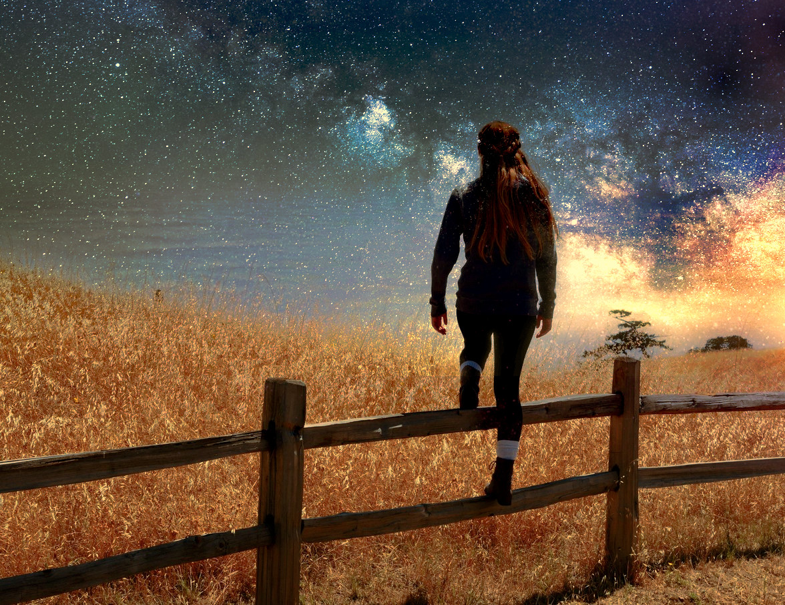

The Great Being
Written June 29th 2020, 10:18:42 pm EDT by Dr. Meow

To rise, to become strong, to grow and to break away and become more authentic,
is our first great responsibility, and our health.
However, it does go against our nature as children,
we have a tendency not to look outside of the culture we are brought into.
Rite of Passage is about crossing that line,
the line between The Child That Follows, and The Adult That Leads.
The moment we can handle looking at ourselves and our culture,
from the outside in, we begin crossing the line into adulthood.
One of the first few thoughts may be, "But what if I was born into a different religion?"
followed by, "What if I was not born into this economic class, into this poverty?".
As these questions grow from asking about ourselves, to also including others,
they bring us insight into the greater Human Condition.
Bring us to the question of The Freedom of Will, of how much our Personality is Our Own,
of internal decision making heavily influenced by external culture or placement.
As we grow we begin asking even greater questions about others,
"Would the petty thief stole, had he not been fractured by the virus of poverty?"
Our minds begin scanning for solutions that aim towards a Greater Good,
towards Word Peace, International Convergence on Wisdom, Unites States of The World.
We begin seeing that although there isn't an answer to every question,
there are Dreams that could prevent the worst of World's Mistakes.
Building schools to help a culture grow,
instead of forecasting war and manufacturing enough weapons.
Preventing the existence of criminals,
by helping little children to Happy Homes, and to a Universal Basic Income.
Trading simple schools and grades for Business Success,
helping children to become Well Funded Entrepreneurs and Investors.
No matter which questions we begin with and how our path is arranged,
we discover how critical Growing Up is, for us, for eveyone.
How much more we are,
than mere followers of the rules that we are born to.
How important to our mental health,
it is not to fall a victim to bad ideas or fractures of poverty.
Our First Great Act in life is lifting ourselves above the culture we are born into,
that is the meaning of the words Rising, Growing Up, Breaking Away, Becoming Stronger.
And the acts of independent thinking that are sure to follow,
are the very foundation of Our Hope in a Better Future.
Have no fear of Rising, of Breaking Away, of Growing Up, of Growing In Strength,
for that is Adulthood, and none can stay children for long.
Close your eyes, and begin building,
because your next step is to become a Great Being.